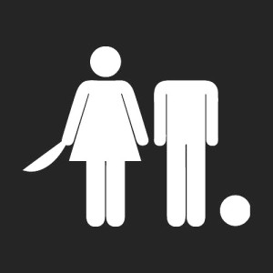
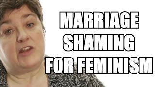

The Male Guide To A Feminist World
Women are at a disadvantage in comparison to men in today’s society. Fact, no argument. Solution: Feminists groups should raise awareness and get society to work towards removing this disadvantage. Problem: As a male, I do not think feminist groups are achieving such things. Rather, I think they are making it harder for male and females to coexist peacefully.
Before I get crucified, I agree in gender equality. I truly believe women should get equal pay to a man. I myself pray for a partner that is not scared to challenge me because we both know we are equals.
But aside from my relationship problems, I think today’s feminists have done a really bad job at giving females equal rights. Rather, I think they have become lost in their cause, and have just made things worse.
1. I’m tired of these Double Standards
Feminism has lead to a whole bunch of double standards that leave even feminists confused. We know that humans are equal regardless of gender, so double standards should not exist. For example, if two humans go out on a date, who pays? You see, you may have already assumed the man. But that’s a double standard. I said two humans, I didn’t specify gender.
| Gender | Male | Female | Cis | Agender | Other |
|---|---|---|---|---|---|
| Male | split | Male | split | split | split |
| Female | Male | split | split | split | split |
| Cis | split | split | split | split | split |
| Agender | split | split | split | split | split |
| Other | split | split | split | split | split |
See for every other combination of gender, it’s assumed to be split except for when it’s a male and female. And that’s a problem for a male to understand when the girl he goes out with is preaching to the choir about gender equality. This underlying double standard is so small, but it leads to grander problems. You see in today’s world, it is not unusual for both partners to work; in fact, I encourage women to go into the work force because they are a significant contribution to the work force. Thus, unless one party is not working, I believe that the bill should be split (on average, of course, chivalry should not die).
Takeaway: if a feminist doesn’t offer to split the bill, walk. It is not worth it.
2. The “Men Blaming” Culture
While do I feel hated every time I show up to a feminist rally? Is it because of the glares from other people? The constant reminders that this is not a concert? Yes, that is a norm for a male showing up to these events, but they hardly threaten us. No, what’s threatening is listening to the speaker talking about how men are evil and women shouldn’t trust men.
New ADA restroom signs. What you think?
This form of propaganda is harmful to both women and men. Firstly, working against men is not a good thing. How can a woman plan to get into a relationship with a man if she is taught that he is evil? How can she work with her partner if her male partner is the “source of all her problems”. Such speech doesn’t allow women and men to coexist equally.
In fact, why would men support such causes if the feminists say “men are evil”. Their movement is not women empowerment, rather it is full of spite and about taking revenge. And yes, it was males that have got us to this current state of gender inequality; however, preaching that all men are evil is not the way to go about it.
I don’t think MLK said this…
Feminism needs to draw in all genders to support female empowerment, not alienate them.
3. Marriage != Submission
I was recently congratulating one of my female friends for getting married. I think marriage should be congratulated; especially in today’s age when it is very uncommon for people to get married.
While everyone was congratulating, of course, there was the one party pooper saying “why did you submit your freedom to a man?”
Oh shut feministcurrent.com
What kind of garbage is this? Feminism should show that women share equal responsibility with their partner in a relationship, not to dissuade them from starting a partnership with another person. Yes it is true, the laws that currently govern our land show that while being married, the man is at an upper hand; but that is means the current “gender role” ideology in our society needs to be abolished, not marriage.
I’m all for this, I hate walking
Relationships dictated by rules and expectations directly inhibit freedom and devises the confines which we must agree to grow within. We all desire freedom which typically marital expectations directly conflicts with. However, I don’t believe marriage to be the issue. I believe the issue lies with selfishness, expectations, and taking things for granted.
Overall
I do support female empowerment, and I do support gender equality. However, with the current stance of feminism in today’s world, it makes it really convincing for a male to join such a cause without becoming a target of hate and anger. I understand feminism, its just that I think it can do better at fighting for gender equality. Women go through struggles every day that I cannot even begin to image, but I pray for the day to come when women do not need to worry about such struggles.